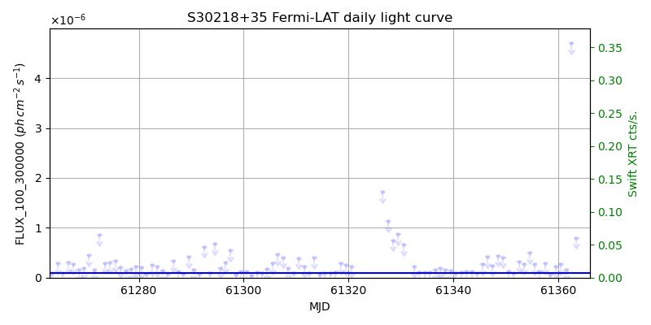
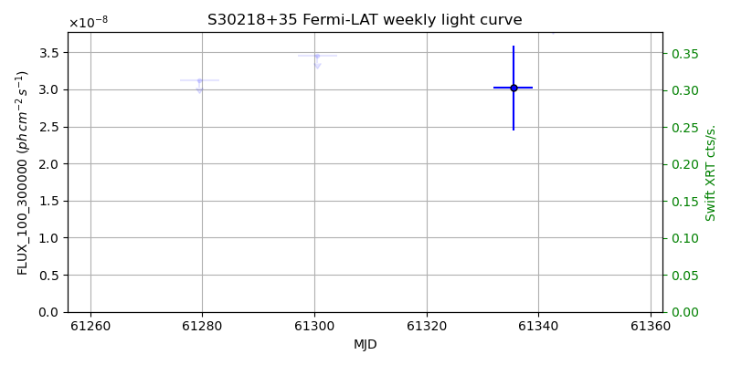
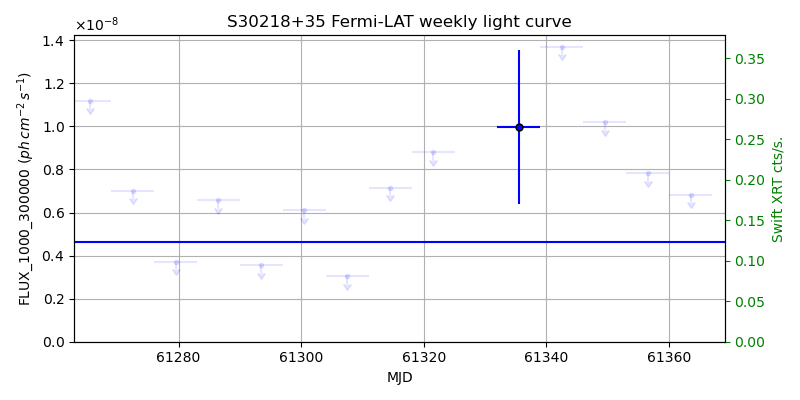

LAT Lightcurve site: https://fermi.gsfc.nasa.gov/ssc/data/access/lat/msl_lc/source/S3_0218p35
Swift site: https://www.swift.psu.edu/monitoring/source.php?source=S30218+35
NED: Query
Time of last update of this page: UT: 2026-11-28 16:12 (MJD: 61372.675)
| Property | Value |
|---|---|
| R.A. | 2:21:05.52 |
| Dec. | 35:56:13.2 |
| z | 0.944 |
| 3FGL SpectrumType | PowerLaw |
| 3FGL PL Index | 2.28 |
| 3FGL Flux_100_300000 | 8.90e-08 1 / (s cm2) |
| 3FGL Flux_1000_300000 | 4.65e-09 1 / (s cm2) |
| 3FGL Flux >200 GeV | 5.21e-12 1 / (s cm2) |
| 3FGL Extrap. Crab >200 GeV | 0.02 |
| 3FGL Flux After EBL Absorption >200GeV | 9.60e-14 1 / (s cm2) |
| 3FGL EBL Crab Fraction >200GeV | 0.00 |

| MJD | dMJD | Flux | dFlux | Frac3FGL | FracCrab>200GeV | EBLFracCrab>200GeV |
|---|---|---|---|---|---|---|
| 61367.50 | 0.50 | 4.38e-07 | 0.00e+00 | 0.00 | 0.00 | 0.00 |
| 61368.50 | 0.50 | 3.00e-07 | 0.00e+00 | 0.00 | 0.00 | 0.00 |
| 61369.50 | 0.50 | 2.49e-07 | 0.00e+00 | 0.00 | 0.00 | 0.00 |
| 61370.50 | 0.50 | 2.21e-07 | 0.00e+00 | 0.00 | 0.00 | 0.00 |
| 61371.50 | 0.50 | 8.47e-07 | 0.00e+00 | 0.00 | 0.00 | 0.00 |

| MJD | dMJD | Flux | dFlux | Frac3FGL | FracCrab>200GeV | EBLFracCrab>200GeV |
|---|---|---|---|---|---|---|
| 61335.50 | 3.50 | 3.02e-08 | 5.72e-09 | 0.34 | 0.01 | 0.00 |
| 61342.50 | 3.50 | 3.92e-08 | 0.00e+00 | 0.00 | 0.00 | 0.00 |
| 61349.50 | 3.50 | 1.19e-07 | 0.00e+00 | 0.00 | 0.00 | 0.00 |
| 61356.50 | 3.50 | 3.96e-08 | 0.00e+00 | 0.00 | 0.00 | 0.00 |
| 61363.50 | 3.50 | 2.38e-07 | 0.00e+00 | 0.00 | 0.00 | 0.00 |
| MJD | dMJD | Flux | dFlux | Frac3FGL | FracCrab>200GeV | EBLFracCrab>200GeV |
|---|---|---|---|---|---|---|
| 61367.50 | 0.50 | 1.97e-07 | 0.00e+00 | 0.00 | 0.00 | 0.00 |
| 61368.50 | 0.50 | 5.84e-08 | 0.00e+00 | 0.00 | 0.00 | 0.00 |
| 61369.50 | 0.50 | 1.46e-07 | 0.00e+00 | 0.00 | 0.00 | 0.00 |
| 61370.50 | 0.50 | 5.67e-08 | 0.00e+00 | 0.00 | 0.00 | 0.00 |
| 61371.50 | 0.50 | 6.24e-08 | 0.00e+00 | 0.00 | 0.00 | 0.00 |

| MJD | dMJD | Flux | dFlux | Frac3FGL | FracCrab>200GeV | EBLFracCrab>200GeV |
|---|---|---|---|---|---|---|
| 61335.50 | 3.50 | 9.98e-09 | 3.58e-09 | 2.15 | 0.05 | 0.00 |
| 61342.50 | 3.50 | 1.37e-08 | 0.00e+00 | 0.00 | 0.00 | 0.00 |
| 61349.50 | 3.50 | 1.02e-08 | 0.00e+00 | 0.00 | 0.00 | 0.00 |
| 61356.50 | 3.50 | 7.82e-09 | 0.00e+00 | 0.00 | 0.00 | 0.00 |
| 61363.50 | 3.50 | 6.82e-09 | 0.00e+00 | 0.00 | 0.00 | 0.00 |
--------------------------------------------------------- Using user-supplied coords: 2:21:05.52 35:56:13.2 2000 --------------------------------------------------------- FLWO UT night of: 2026-11-29 Local Sid. @ Midnight: 04:08 Sunset (-15.0) (local, UT): 18:31 01:31 Sunrise (-15.0) (local, UT): 05:53 12:53 Moonrise (local, UT): 21:57 04:57 Moonset (local, UT): Moon phase: 0.72 --------------------------------------------------------- AzTime LSID UT Obj_el Obj_az Mn_el Mn_az Sep. --------------------------------------------------------- 18:31 22:39 01:31 44.1 68.6 -32.9 32.1 83.8 19:01 23:09 02:01 50.0 70.1 -29.4 38.9 84.2 19:31 23:39 02:31 56.1 71.2 -25.4 45.0 84.5 20:01 00:09 03:01 62.2 71.8 -21.0 50.6 84.8 20:31 00:39 03:31 68.2 71.3 -16.2 55.6 85.2 21:01 01:09 04:01 74.3 68.9 -11.1 60.2 85.5 21:31 01:39 04:31 80.1 60.9 -5.4 64.5 85.8 22:01 02:09 05:01 84.9 30.4 0.4 68.5 86.1 22:31 02:39 05:31 84.3 322.0 5.8 72.2 86.3 23:01 03:10 06:01 79.3 297.3 11.6 75.8 86.6 23:31 03:40 06:31 73.4 290.6 17.5 79.4 86.9 00:01 04:10 07:01 67.3 288.5 23.6 82.9 87.1 00:31 04:40 07:31 61.3 288.3 29.7 86.5 87.4 01:01 05:10 08:01 55.2 288.9 35.8 90.3 87.6 01:31 05:40 08:31 49.2 290.1 42.0 94.4 87.8 02:01 06:10 09:01 43.2 291.7 48.1 99.1 88.0 02:31 06:40 09:31 37.3 293.6 54.2 104.7 88.2 03:01 07:10 10:01 31.5 295.7 60.1 111.7 88.4 03:31 07:40 10:31 25.8 298.1 65.6 121.1 88.6 04:01 08:10 11:01 20.2 300.7 70.5 134.7 88.8 04:31 08:40 11:31 14.8 303.6 74.0 154.7 89.0 05:01 09:11 12:01 9.6 306.7 75.2 181.1 89.2 05:31 09:41 12:31 4.7 310.2 73.6 206.8 89.4 05:53 10:02 12:53 1.4 312.9 71.0 221.2 89.6 --------------------------------------------------------- Dark hours >55 deg.: 2.52 srcstart (UT): 2026-11-29 02:25 srcend (UT): 2026-11-29 04:57